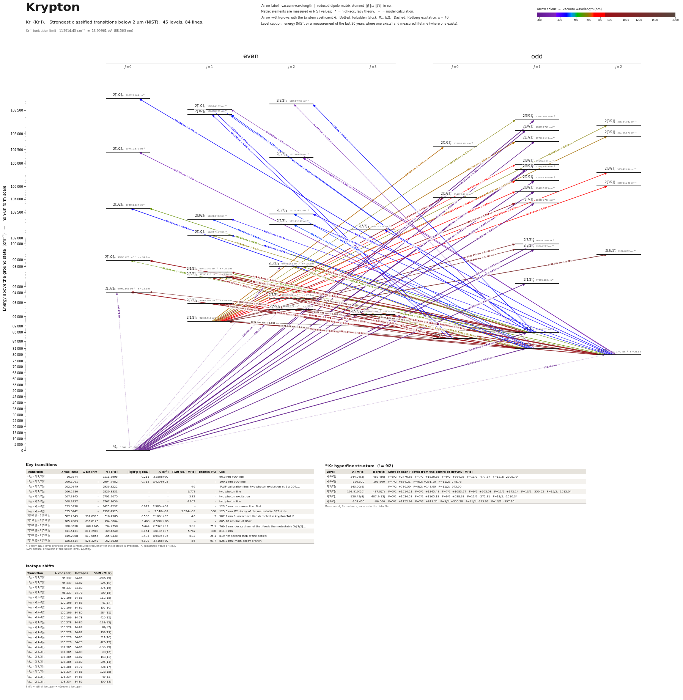

Krypton energy level diagram
Energy levels and transitions of neutral krypton (Kr I): the 84 strongest classified lines below 2 µm from the NIST Atomic Spectra Database and the 45 levels they connect, each line with its vacuum wavelength, frequency and, for 79 of them, the reduced dipole matrix element derived from the NIST transition rate. Measured lifetimes, transition rates, hyperfine constants and isotope shifts from the literature are included, each with its citation.
Hover a line or a level to isolate it, click to keep it selected. Scroll to zoom, drag to move.

Download: diagram (PDF) diagram (SVG) transitions (CSV) levels (CSV) source code

Key transitions of krypton
| Transition | λ vac (nm) | λ air (nm) | ν (THz) | |⟨J‖er‖J′⟩| (ea₀) | A (s⁻¹) | Γ/2π up. (MHz) | branch (%) | Use |
|---|---|---|---|---|---|---|---|---|
| 1S0 – 2[1/2]°1 | 96.3374 | – | 3111.8995 | 0.211 | 3.350e+07 | – | – | 96.3 nm VUV line |
| 1S0 – 2[3/2]°1 | 100.1061 | – | 2994.7482 | 0.713 | 3.420e+08 | – | – | 100.1 nm VUV line |
| 1S0 – 2[3/2]2 | 102.0979 | – | 2936.3222 | – | – | 4.6 | – | TALIF calibration line: two-photon excitation at 2 x 204.… |
| 1S0 – 2[1/2]0 | 106.2780 | – | 2820.8331 | – | – | 6.773 | – | two-photon line |
| 1S0 – 2[3/2]2 | 107.3845 | – | 2791.7675 | – | – | 5.82 | – | two-photon excitation |
| 1S0 – 2[5/2]2 | 108.3337 | – | 2767.3056 | – | – | 4.967 | – | two-photon line |
| 1S0 – 2[3/2]°1 | 123.5838 | – | 2425.8237 | 0.913 | 2.980e+08 | – | – | 123.6 nm resonance line: first |
| 1S0 – 2[3/2]°2 | 125.0442 | – | 2397.4925 | – | 3.540e-02 | 5.624e-09 | 100 | 125.0 nm M2 decay of the metastable 3P2 state |
| 2[3/2]°1 – 2[3/2]2 | 587.2543 | 587.0916 | 510.4985 | 0.596 | 7.100e+05 | 4.6 | 2 | 587.1 nm fluorescence line detected in krypton TALIF |
| 2[1/2]1 – 2[1/2]°1 | 605.7803 | 605.6126 | 494.8864 | 1.463 | 6.500e+06 | – | – | 605.78 nm line of 86Kr |
| 2[3/2]°2 – 2[3/2]2 | 760.3638 | 760.1545 | 394.2750 | 5.444 | 2.732e+07 | 5.82 | 75.1 | 760.2 nm: decay channel that feeds the metastable 5s[3/2]… |
| 2[3/2]°2 – 2[5/2]3 | 811.5131 | 811.2900 | 369.4240 | 8.164 | 3.610e+07 | 5.747 | 100 | 811.3 nm |
| 2[3/2]°1 – 2[3/2]2 | 819.2308 | 819.0056 | 365.9438 | 3.483 | 8.940e+06 | 5.82 | 24.1 | 819 nm second step of the optical |
| 2[1/2]°1 – 2[3/2]2 | 826.5514 | 826.3242 | 362.7028 | 6.899 | 3.416e+07 | 4.6 | 97.7 | 826.3 nm: main decay branch |
λ, ν from NIST level energies unless a measured frequency for this isotope is available. A: measured value or NIST. Γ/2π: natural linewidth of the upper level, 1/(2πτ).
83Kr hyperfine structure (I = 9/2)
| Level | A (MHz) | B (MHz) | Shift of each F level from the centre of gravity (MHz) |
|---|---|---|---|
| 2[3/2]°2 | -244.04(3) | -453.4(6) | F=5/2: +2476.65 F=7/2: +1820.86 F=9/2: +864.35 F=11/2: -477.87 F=13/2: -2309.70 |
| 2[3/2]°1 | -160.500 | -105.900 | F=7/2: +834.21 F=9/2: +231.10 F=11/2: -748.73 |
| 2[1/2]1 | -143.00(9) | – | F=7/2: +786.50 F=9/2: +143.00 F=11/2: -643.50 |
| 2[5/2]3 | -103.910(20) | -437.0(7) | F=3/2: +1514.21 F=5/2: +1345.48 F=7/2: +1083.77 F=9/2: +703.58 F=11/2: +172.14 F=13/2: -550.62 F=15/2: -1512.04 |
| 2[5/2]2 | -156.49(8) | -407.7(13) | F=5/2: +1534.53 F=7/2: +1165.18 F=9/2: +588.38 F=11/2: -272.31 F=13/2: -1510.34 |
| 2[3/2]2 | -108.400 | -86.000 | F=5/2: +1152.98 F=7/2: +811.21 F=9/2: +350.28 F=11/2: -245.92 F=13/2: -997.10 |
Measured A, B constants; sources in the data file.
Isotope shifts
| Transition | λ vac (nm) | Isotopes | Shift (MHz) |
|---|---|---|---|
| 1S0 – 2[1/2]°1 | 96.337 | 84-86 | -206(15) |
| 1S0 – 2[1/2]°1 | 96.337 | 84-82 | 226(10) |
| 1S0 – 2[1/2]°1 | 96.337 | 84-80 | 475(15) |
| 1S0 – 2[1/2]°1 | 96.337 | 84-78 | 709(15) |
| 1S0 – 2[3/2]°1 | 100.106 | 84-86 | -112(15) |
| 1S0 – 2[3/2]°1 | 100.106 | 84-83 | 91(14) |
| 1S0 – 2[3/2]°1 | 100.106 | 84-82 | 157(10) |
| 1S0 – 2[3/2]°1 | 100.106 | 84-80 | 284(15) |
| 1S0 – 2[3/2]°1 | 100.106 | 84-78 | 425(15) |
| 1S0 – 2[1/2]0 | 106.278 | 84-86 | -138(15) |
| 1S0 – 2[1/2]0 | 106.278 | 84-83 | 88(17) |
| 1S0 – 2[1/2]0 | 106.278 | 84-82 | 138(17) |
| 1S0 – 2[1/2]0 | 106.278 | 84-80 | 311(16) |
| 1S0 – 2[1/2]0 | 106.278 | 84-78 | 426(15) |
| 1S0 – 2[3/2]2 | 107.385 | 84-86 | -130(15) |
| 1S0 – 2[3/2]2 | 107.385 | 84-83 | 83(16) |
| 1S0 – 2[3/2]2 | 107.385 | 84-82 | 148(13) |
| 1S0 – 2[3/2]2 | 107.385 | 84-80 | 295(14) |
| 1S0 – 2[3/2]2 | 107.385 | 84-78 | 435(17) |
| 1S0 – 2[5/2]2 | 108.334 | 84-86 | -123(15) |
| 1S0 – 2[5/2]2 | 108.334 | 84-83 | 95(15) |
| 1S0 – 2[5/2]2 | 108.334 | 84-82 | 150(13) |
Shift = ν(first isotope) − ν(second isotope).
Listed Kr transitions below 2 µm
| Lower level | Upper level | λ vacuum (nm) | λ air (nm) | ν (THz) | Type | |⟨J‖er‖J′⟩| (ea₀) | A (s⁻¹) | Branching (%) | Source of matrix element / A |
|---|---|---|---|---|---|---|---|---|---|
| 1S0 | 2[3/2]°1 | 92.2739 | – | 3248.9421 | E1 | 0.248 NIST | 5.300e+07 NIST | – | NIST ASD (accuracy C) |
| 1S0 | 2[3/2]°1 | 92.3713 | – | 3245.5158 | E1 | 0.365 NIST | 1.140e+08 NIST | – | NIST ASD (accuracy C) |
| 1S0 | 2[1/2]°1 | 92.8711 | – | 3228.0497 | E1 | 0.0678 NIST | 3.870e+06 NIST | – | NIST ASD (accuracy C) |
| 1S0 | 2[3/2]°1 | 94.5441 | – | 3170.9259 | E1 | 0.593 NIST | 2.810e+08 NIST | – | NIST ASD (accuracy C) |
| 1S0 | 2[3/2]°1 | 94.6536 | – | 3167.2604 | E1 | 0.435 NIST | 1.510e+08 NIST | – | NIST ASD (accuracy C) |
| 1S0 | 2[1/2]°1 | 95.1056 | – | 3152.2077 | E1 | 0.181 NIST | 2.580e+07 NIST | – | NIST ASD (accuracy C) |
| 1S0 | 2[3/2]°1 | 95.3404 | – | 3144.4426 | E1 | 0.369 NIST | 1.060e+08 NIST | – | NIST ASD (accuracy C) |
| 1S0 | 2[1/2]°1 | 96.3374 | – | 3111.8995 | E1 | 0.211 NIST | 3.350e+07 NIST | – | NIST ASD (accuracy C) |
| 1S0 | 2[3/2]°1 | 100.1061 | – | 2994.7482 | E1 | 0.713 NIST | 3.420e+08 NIST | – | NIST ASD (accuracy C) |
| 1S0 | 2[3/2]°1 | 100.3550 | – | 2987.3183 | E1 | 0.522 NIST | 1.820e+08 NIST | – | NIST ASD (accuracy C) |
| 1S0 | 2[3/2]2 | 102.0979 | – | 2936.3222 | two-photon | – | – | – | – |
| 1S0 | 2[1/2]°1 | 103.0023 | – | 2910.5409 | E1 | 0.134 NIST | 1.110e+07 NIST | – | NIST ASD (accuracy C+) |
| 1S0 | 2[1/2]0 | 106.2780 | – | 2820.8331 | two-photon | – | – | – | – |
| 1S0 | 2[3/2]2 | 107.3845 | – | 2791.7675 | two-photon | – | – | – | – |
| 1S0 | 2[5/2]2 | 108.3337 | – | 2767.3056 | two-photon | – | – | – | – |
| 1S0 | 2[1/2]°1 | 116.4867 | – | 2573.6195 | E1 | 0.850 NIST | 3.090e+08 NIST | – | NIST ASD (accuracy A+) |
| 1S0 | 2[3/2]°1 | 123.5838 | – | 2425.8237 | E1 | 0.913 NIST | 2.980e+08 NIST | – | NIST ASD (accuracy A+) |
| 1S0 | 2[3/2]°2 | 125.0442 | – | 2397.4925 | M2 | – | 3.540e-02 measured | 100 | Lefers et al., Phys. Rev. A 66, 012507 (2002) (abstract) |
| 2[3/2]°2 | 2[1/2]1 | 350.3555 | 350.2553 | 855.6808 | E1 | 0.121 NIST | 2.300e+05 NIST | – | NIST ASD (accuracy D+) |
| 2[3/2]°1 | 2[3/2]2 | 361.6506 | 361.5474 | 828.9561 | E1 | 0.115 NIST | 1.140e+05 NIST | – | NIST ASD (accuracy C) |
| 2[3/2]°2 | 2[3/2]2 | 366.6368 | 366.5324 | 817.6823 | E1 | 0.532 NIST | 2.330e+06 NIST | – | NIST ASD (accuracy C) |
| 2[3/2]°1 | 2[1/2]0 | 377.4495 | 377.3423 | 794.2585 | E1 | 0.229 NIST | 1.980e+06 NIST | – | NIST ASD (accuracy C) |
| 2[3/2]°2 | 2[3/2]2 | 427.5172 | 427.3969 | 701.2407 | E1 | 0.620 NIST | 1.990e+06 NIST | – | NIST ASD (accuracy C+) |
| 2[3/2]°2 | 2[3/2]1 | 428.4172 | 428.2967 | 699.7675 | E1 | 0.144 NIST | 1.770e+05 NIST | – | NIST ASD (accuracy C+) |
| 2[1/2]°0 | 2[1/2]1 | 428.7693 | 428.6487 | 699.1929 | E1 | 0.342 NIST | 1.000e+06 NIST | – | NIST ASD (accuracy C) |
| 2[1/2]°0 | 2[3/2]1 | 430.1696 | 430.0486 | 696.9168 | E1 | 0.251 NIST | 5.330e+05 NIST | – | NIST ASD (accuracy C) |
| 2[3/2]°2 | 2[5/2]2 | 431.9766 | 431.8552 | 694.0016 | E1 | 0.319 NIST | 5.130e+05 NIST | – | NIST ASD (accuracy C) |
| 2[3/2]°2 | 2[5/2]3 | 432.0794 | 431.9580 | 693.8365 | E1 | 0.590 NIST | 1.250e+06 NIST | – | NIST ASD (accuracy C) |
| 2[1/2]°1 | 2[1/2]0 | 435.2583 | 435.1360 | 688.7691 | E1 | 0.301 NIST | 2.220e+06 NIST | – | NIST ASD (accuracy C+) |
| 2[3/2]°2 | 2[1/2]1 | 436.3868 | 436.2642 | 686.9880 | E1 | 0.230 NIST | 4.280e+05 NIST | – | NIST ASD (accuracy B) |
| 2[3/2]°1 | 2[1/2]0 | 437.7351 | 437.6121 | 684.8718 | E1 | 0.394 NIST | 3.740e+06 NIST | – | NIST ASD (accuracy C+) |
| 2[1/2]°1 | 2[3/2]2 | 440.1202 | 439.9966 | 681.1604 | E1 | 0.515 NIST | 1.260e+06 NIST | – | NIST ASD (accuracy C+) |
| 2[1/2]°1 | 2[1/2]1 | 441.1607 | 441.0368 | 679.5539 | E1 | 0.189 NIST | 2.800e+05 NIST | – | NIST ASD (accuracy C+) |
| 2[1/2]°1 | 2[3/2]1 | 442.6433 | 442.5190 | 677.2778 | E1 | 0.279 NIST | 6.050e+05 NIST | – | NIST ASD (accuracy C+) |
| 2[3/2]°1 | 2[3/2]2 | 445.5168 | 445.3917 | 672.9095 | E1 | 0.294 NIST | 3.970e+05 NIST | – | NIST ASD (accuracy B) |
| 2[3/2]°1 | 2[3/2]1 | 446.4943 | 446.3690 | 671.4363 | E1 | 0.395 NIST | 1.181e+06 NIST | – | NIST ASD (accuracy B) |
| 2[3/2]°1 | 2[5/2]2 | 450.3617 | 450.2354 | 665.6704 | E1 | 0.419 NIST | 7.800e+05 NIST | – | NIST ASD (accuracy C) |
| 2[3/2]°2 | 2[3/2]2 | 556.3770 | 556.2225 | 538.8297 | E1 | 0.216 measured | 1.100e+05 measured | 0.3 | Dzierzega, Volz, Nave, Griesmann, Phys. Rev. A 62, 022505 (2000) [arXiv:physics/0005057],… |
| 2[3/2]°2 | 2[1/2]1 | 557.1836 | 557.0289 | 538.0497 | E1 | 0.501 measured | 9.800e+05 measured | 2.8 | Dzierzega, Volz, Nave, Griesmann, Phys. Rev. A 62, 022505 (2000) [arXiv:physics/0005057],… |
| 2[3/2]°1 | 2[1/2]0 | 557.4664 | 557.3116 | 537.7768 | E1 | 0.0585 measured | 4.000e+04 measured | 0.1 | Dzierzega, Volz, Nave, Griesmann, Phys. Rev. A 62, 022505 (2000) [arXiv:physics/0005057],… |
| 2[1/2]°1 | 2[1/2]0 | 558.1937 | 558.0387 | 537.0761 | E1 | 0.227 NIST | 6.000e+05 NIST | – | NIST ASD (accuracy C) |
| 2[3/2]°2 | 2[3/2]1 | 567.4025 | 567.2451 | 528.3594 | E1 | 0.0637 measured | 1.500e+04 measured | 0.044 | Dzierzega, Volz, Nave, Griesmann, Phys. Rev. A 62, 022505 (2000) [arXiv:physics/0005057],… |
| 2[1/2]1 | 2[3/2]°1 | 581.2424 | 581.0812 | 515.7787 | E1 | 0.226 NIST | 1.750e+05 NIST | – | NIST ASD (accuracy D+) |
| 2[1/2]1 | 2[3/2]°2 | 582.8706 | 582.7090 | 514.3379 | E1 | 0.617 NIST | 7.800e+05 NIST | – | NIST ASD (accuracy C) |
| 2[1/2]°1 | 2[1/2]1 | 586.8376 | 586.6750 | 510.8610 | E1 | 0.243 NIST | 1.970e+05 NIST | – | NIST ASD (accuracy C+) |
| 2[3/2]°1 | 2[3/2]2 | 587.2543 | 587.0916 | 510.4985 | E1 | 0.596 measured | 7.100e+05 measured | 2 | Dzierzega, Volz, Nave, Griesmann, Phys. Rev. A 62, 022505 (2000) [arXiv:physics/0005057],… |
| 2[3/2]°1 | 2[1/2]1 | 588.1530 | 587.9900 | 509.7185 | E1 | 0.129 measured | 5.500e+04 measured | 0.2 | Dzierzega, Volz, Nave, Griesmann, Phys. Rev. A 62, 022505 (2000) [arXiv:physics/0005057],… |
| 2[3/2]°1 | 2[3/2]1 | 599.5510 | 599.3850 | 500.0283 | E1 | 0.126 measured | 5.000e+04 measured | 0.15 | Dzierzega, Volz, Nave, Griesmann, Phys. Rev. A 62, 022505 (2000) [arXiv:physics/0005057],… |
| 2[1/2]1 | 2[3/2]°2 | 601.3821 | 601.2156 | 498.5058 | E1 | 1.133 NIST | 2.390e+06 NIST | – | NIST ASD (accuracy D+) |
| 2[1/2]1 | 2[1/2]°1 | 605.7803 | 605.6126 | 494.8864 | E1 | 1.463 NIST | 6.500e+06 NIST | – | NIST ASD (accuracy D+) |
| 2[1/2]1 | 2[1/2]°0 | 608.4545 | 608.2861 | 492.7114 | E1 | 0.888 NIST | 7.100e+06 NIST | – | NIST ASD (accuracy D+) |
| 2[1/2]1 | 2[3/2]°1 | 684.8290 | 684.6400 | 437.7625 | E1 | 0.396 NIST | 3.300e+05 NIST | – | NIST ASD (accuracy D+) |
| 2[1/2]1 | 2[3/2]°2 | 690.6584 | 690.4679 | 434.0677 | E1 | 1.137 NIST | 1.590e+06 NIST | – | NIST ASD (accuracy C+) |
| 2[1/2]1 | 2[1/2]°1 | 715.4194 | 715.2222 | 419.0444 | E1 | 0.424 NIST | 3.320e+05 NIST | – | NIST ASD (accuracy C) |
| 2[1/2]1 | 2[3/2]°2 | 722.6097 | 722.4106 | 414.8747 | E1 | 1.666 NIST | 2.980e+06 NIST | – | NIST ASD (accuracy C+) |
| 2[1/2]1 | 2[3/2]°1 | 728.9267 | 728.7259 | 411.2793 | E1 | 1.305 NIST | 2.970e+06 NIST | – | NIST ASD (accuracy D+) |
| 2[3/2]°1 | 2[1/2]0 | 758.9502 | 758.7413 | 395.0094 | E1 | 3.049 measured | 4.310e+07 measured | 99.7 | Dzierzega, Volz, Nave, Griesmann, Phys. Rev. A 62, 022505 (2000) [arXiv:physics/0005057],… |
| 2[3/2]°2 | 2[3/2]2 | 760.3638 | 760.1545 | 394.2750 | E1 | 5.444 measured | 2.732e+07 measured | 75.1 | Dzierzega, Volz, Nave, Griesmann, Phys. Rev. A 62, 022505 (2000) [arXiv:physics/0005057],… |
| 2[1/2]°1 | 2[1/2]0 | 768.7361 | 768.5246 | 389.9810 | E1 | 3.019 measured | 4.064e+07 measured | 99.9 | Dzierzega, Volz, Nave, Griesmann, Phys. Rev. A 62, 022505 (2000) [arXiv:physics/0005057],… |
| 2[3/2]°2 | 2[3/2]1 | 769.6658 | 769.4540 | 389.5099 | E1 | 1.698 measured | 4.270e+06 measured | 12.7 | Dzierzega, Volz, Nave, Griesmann, Phys. Rev. A 62, 022505 (2000) [arXiv:physics/0005057],… |
| 2[1/2]1 | 2[1/2]°0 | 774.8961 | 774.6829 | 386.8809 | E1 | 1.646 NIST | 1.180e+07 NIST | – | NIST ASD (accuracy C+) |
| 2[1/2]°0 | 2[1/2]1 | 785.6984 | 785.4823 | 381.5618 | E1 | 3.829 measured | 2.041e+07 measured | 57.3 | Dzierzega, Volz, Nave, Griesmann, Phys. Rev. A 62, 022505 (2000) [arXiv:physics/0005057],… |
| 2[1/2]1 | 2[1/2]°1 | 791.5602 | 791.3425 | 378.7361 | E1 | 1.897 NIST | 4.900e+06 NIST | – | NIST ASD (accuracy D+) |
| 2[1/2]°0 | 2[3/2]1 | 806.1721 | 805.9505 | 371.8715 | E1 | 3.504 measured | 1.583e+07 measured | 46.5 | Dzierzega, Volz, Nave, Griesmann, Phys. Rev. A 62, 022505 (2000) [arXiv:physics/0005057],… |
| 2[3/2]°2 | 2[5/2]2 | 810.6594 | 810.4365 | 369.8131 | E1 | 3.432 measured | 8.960e+06 measured | 28.7 | Dzierzega, Volz, Nave, Griesmann, Phys. Rev. A 62, 022505 (2000) [arXiv:physics/0005057],… |
| 2[3/2]°2 | 2[5/2]3 | 811.5131 | 811.2900 | 369.4240 | E1 | 8.164 measured | 3.610e+07 measured | 100 | Dzierzega, Volz, Nave, Griesmann, Phys. Rev. A 62, 022505 (2000) [arXiv:physics/0005057],… |
| 2[3/2]°1 | 2[3/2]2 | 819.2308 | 819.0056 | 365.9438 | E1 | 3.483 measured | 8.940e+06 measured | 24.1 | Dzierzega, Volz, Nave, Griesmann, Phys. Rev. A 62, 022505 (2000) [arXiv:physics/0005057],… |
| 2[1/2]°1 | 2[3/2]2 | 826.5514 | 826.3242 | 362.7028 | E1 | 6.899 measured | 3.416e+07 measured | 97.7 | Dzierzega, Volz, Nave, Griesmann, Phys. Rev. A 62, 022505 (2000) [arXiv:physics/0005057],… |
| 2[1/2]°1 | 2[1/2]1 | 828.3328 | 828.1052 | 361.9227 | E1 | 3.454 measured | 1.418e+07 measured | 39.8 | Dzierzega, Volz, Nave, Griesmann, Phys. Rev. A 62, 022505 (2000) [arXiv:physics/0005057],… |
| 2[3/2]°1 | 2[3/2]1 | 830.0390 | 829.8109 | 361.1787 | E1 | 4.982 measured | 2.931e+07 measured | 86.8 | Dzierzega, Volz, Nave, Griesmann, Phys. Rev. A 62, 022505 (2000) [arXiv:physics/0005057],… |
| 2[1/2]°1 | 2[3/2]1 | 851.1210 | 850.8872 | 352.2325 | E1 | 4.066 measured | 1.811e+07 measured | 53.3 | Dzierzega, Volz, Nave, Griesmann, Phys. Rev. A 62, 022505 (2000) [arXiv:physics/0005057],… |
| 2[3/2]°1 | 2[5/2]2 | 877.9161 | 877.6750 | 341.4819 | E1 | 6.084 measured | 2.217e+07 measured | 71 | Dzierzega, Volz, Nave, Griesmann, Phys. Rev. A 62, 022505 (2000) [arXiv:physics/0005057],… |
| 2[3/2]°2 | 2[1/2]1 | 893.1144 | 892.8693 | 335.6708 | E1 | 4.914 measured | 2.289e+07 measured | 87.3 | Dzierzega, Volz, Nave, Griesmann, Phys. Rev. A 62, 022505 (2000) [arXiv:physics/0005057],… |
| 2[3/2]°1 | 2[1/2]1 | 975.4435 | 975.1761 | 307.3396 | E1 | 2.074 measured | 3.130e+06 measured | 12 | Dzierzega, Volz, Nave, Griesmann, Phys. Rev. A 62, 022505 (2000) [arXiv:physics/0005057],… |
| 2[1/2]1 | 2[3/2]°1 | 1146.0617 | 1145.7480 | 261.5849 | E1 | 2.111 NIST | 2.000e+06 NIST | – | NIST ASD (accuracy B) |
| 2[1/2]1 | 2[3/2]°1 | 1179.5656 | 1179.2428 | 254.1550 | E1 | 1.187 NIST | 5.800e+05 NIST | – | NIST ASD (accuracy C+) |
| 2[1/2]1 | 2[3/2]°2 | 1182.2613 | 1181.9378 | 253.5755 | E1 | 5.751 NIST | 8.110e+06 NIST | – | NIST ASD (accuracy B) |
| 2[1/2]°1 | 2[1/2]0 | 1212.6860 | 1212.3542 | 247.2136 | E1 | 0.363 measured | 1.500e+05 measured | 0.35 | Dzierzega, Volz, Nave, Griesmann, Phys. Rev. A 62, 022505 (2000) [arXiv:physics/0005057],… |
| 2[1/2]°0 | 2[3/2]1 | 1286.5414 | 1286.1895 | 233.0220 | E1 | 0.489 measured | 7.600e+04 measured | 0.31 | Dzierzega, Volz, Nave, Griesmann, Phys. Rev. A 62, 022505 (2000) [arXiv:physics/0005057],… |
| 2[1/2]°1 | 2[3/2]2 | 1374.2613 | 1373.8857 | 218.1481 | E1 | 1.409 measured | 3.100e+05 measured | 0.83 | Dzierzega, Volz, Nave, Griesmann, Phys. Rev. A 62, 022505 (2000) [arXiv:physics/0005057],… |
| 2[1/2]°1 | 2[3/2]1 | 1404.9503 | 1404.5663 | 213.3830 | E1 | 0.660 measured | 1.060e+05 measured | 0.23 | Dzierzega, Volz, Nave, Griesmann, Phys. Rev. A 62, 022505 (2000) [arXiv:physics/0005057],… |
| 2[1/2]°1 | 2[5/2]2 | 1547.8261 | 1547.4033 | 193.6861 | E1 | 0.861 measured | 8.100e+04 measured | 0.26 | Dzierzega, Volz, Nave, Griesmann, Phys. Rev. A 62, 022505 (2000) [arXiv:physics/0005057],… |
| 2[1/2]°0 | 2[1/2]1 | 1673.1086 | 1672.6517 | 179.1829 | E1 | 0.935 measured | 1.260e+05 measured | 0.48 | Dzierzega, Volz, Nave, Griesmann, Phys. Rev. A 62, 022505 (2000) [arXiv:physics/0005057],… |
| 2[1/2]°1 | 2[1/2]1 | 1879.0598 | 1878.5469 | 159.5439 | E1 | 0.853 measured | 7.400e+04 measured | 0.28 | Dzierzega, Volz, Nave, Griesmann, Phys. Rev. A 62, 022505 (2000) [arXiv:physics/0005057],… |
Reduced dipole matrix elements follow the convention A = ω³|d|²/(3πε₀ħc³(2J′+1)), with J′ the upper level. Tags show where a number comes from: measured, NIST compilation, high-accuracy theory, or a model calculation.
Kr energy levels
| Level | Energy (cm⁻¹) | J | Parity | Lifetime | gJ | Hyperfine A (MHz) | Hyperfine B (MHz) | Lifetime source | Hyperfine source |
|---|---|---|---|---|---|---|---|---|---|
| 1S0 | 0.000 | 0 | even | stable | – | – | – | – | – |
| 2[3/2]°2 | 79971.742 | 2 | odd | 28.3 s measured | – | -244.04 | -453.36 | Lefers et al., Phys. Rev. A 66, 012507 (2002) (abstract) | Williams, Lu, Rudinger, Xu, Yokochi, Mueller, Phys. Rev. A 83, 012512 (2011) [arXiv:1012.… |
| 2[3/2]°1 | 80916.768 | 1 | odd | – | – | -160.5 | -105.9 | – | Jackson, J. Opt. Soc. Am. 67, 1638 (1977) [as quoted in Zhang, Ritterbusch, Hu, Dong, Gao… |
| 2[1/2]°0 | 85191.617 | 0 | odd | 488 ms theory | – | – | – | Small-Warren & Chiu, Phys. Rev. A 11, 1777 (1975) (abstract) | – |
| 2[1/2]°1 | 85846.705 | 1 | odd | – | – | – | – | – | – |
| 2[1/2]1 | 91168.515 | 1 | even | 40.9 ns measured | – | -143 | – | best estimate of the non-beam-gas-laser experimental lifetimes (pulsed-laser and arc data… | Husson et al., 'Mesure de constantes de structure hyperfine de niveaux 6p du xenon et 5p … |
| 2[5/2]3 | 92294.401 | 3 | even | 27.69 ns measured | – | -103.91 | -437.03 | Schmitt, Pisella, Volz, Schmoranzer, ASOS6 abstracts p. 143 (1998), beam-gas-laser spectr… | Williams, Lu, Rudinger, Xu, Yokochi, Mueller, Phys. Rev. A 83, 012512 (2011) [arXiv:1012.… |
| 2[5/2]2 | 92307.379 | 2 | even | 32.04 ns measured | – | -156.49 | -407.7 | Schmitt, Pisella, Volz, Schmoranzer, ASOS6 abstracts p. 143 (1998), beam-gas-laser spectr… | Cannon & Janik, Phys. Rev. A 42, 397 (1990) [as quoted in Brandi, Hogervorst, Ubachs, J. … |
| 2[3/2]1 | 92964.394 | 1 | even | 29.62 ns measured | – | – | – | Schmitt, Pisella, Volz, Schmoranzer, ASOS6 abstracts p. 143 (1998), beam-gas-laser spectr… | – |
| 2[3/2]2 | 93123.341 | 2 | even | 27.34 ns measured | – | -108.4 | -86 | Schmitt, Pisella, Volz, Schmoranzer, ASOS6 abstracts p. 143 (1998), beam-gas-laser spectr… | Cannon, Phys. Rev. A 47, 1148 (1993) [as quoted in Zhang, Ritterbusch, Hu, Dong, Gao, Jia… |
| 2[1/2]0 | 94092.863 | 0 | even | 23.5 ns measured | – | – | – | best estimate of the non-beam-gas-laser experimental lifetimes (pulsed-laser and arc data… | – |
| 2[1/2]°1 | 97085.193 | 1 | odd | – | – | – | – | – | – |
| 2[3/2]1 | 97595.915 | 1 | even | 29.4 ns measured | – | – | – | Schmitt, Pisella, Volz, Schmoranzer, ASOS6 abstracts p. 143 (1998), beam-gas-laser spectr… | – |
| 2[1/2]1 | 97919.147 | 1 | even | 28.07 ns measured | – | – | – | Schmitt, Pisella, Volz, Schmoranzer, ASOS6 abstracts p. 143 (1998), beam-gas-laser spectr… | – |
| 2[3/2]2 | 97945.166 | 2 | even | 34.6 ns measured | – | – | – | Gazeli, Aubert, Prasanna, Duluard, Lombardi, Hassouni, arXiv:2012.14685 (2020) | – |
| 2[1/2]0 | 98855.070 | 0 | even | 24.6 ns measured | – | – | – | best estimate of the non-beam-gas-laser experimental lifetimes (pulsed-laser and arc data… | – |
| 2[3/2]°2 | 99626.882 | 2 | odd | – | – | – | – | – | – |
| 2[3/2]°1 | 99646.212 | 1 | odd | – | – | – | – | – | – |
| 2[3/2]°1 | 99894.049 | 1 | odd | – | – | – | – | – | – |
| 2[1/2]1 | 102887.194 | 1 | even | – | – | – | – | – | – |
| 2[5/2]3 | 103115.634 | 3 | even | – | – | – | – | – | – |
| 2[5/2]2 | 103121.142 | 2 | even | – | – | – | – | – | – |
| 2[3/2]1 | 103313.473 | 1 | even | – | – | – | – | – | – |
| 2[3/2]2 | 103362.612 | 2 | even | – | – | – | – | – | – |
| 2[1/2]0 | 103761.634 | 0 | even | – | – | – | – | – | – |
| 2[1/2]°1 | 103801.793 | 1 | odd | – | – | – | – | – | – |
| 2[1/2]°0 | 104073.471 | 0 | odd | – | – | – | – | – | – |
| 2[3/2]°1 | 104887.315 | 1 | odd | – | – | – | – | – | – |
| 2[3/2]°2 | 105007.245 | 2 | odd | – | – | – | – | – | – |
| 2[1/2]°1 | 105146.330 | 1 | odd | – | – | – | – | – | – |
| 2[3/2]°2 | 105647.454 | 2 | odd | – | – | – | – | – | – |
| 2[3/2]°1 | 105648.434 | 1 | odd | – | – | – | – | – | – |
| 2[3/2]°1 | 105770.701 | 1 | odd | – | – | – | – | – | – |
| 2[3/2]2 | 107246.688 | 2 | even | – | – | – | – | – | – |
| 2[1/2]0 | 107410.379 | 0 | even | – | – | – | – | – | – |
| 2[1/2]°0 | 107603.597 | 0 | odd | – | – | – | – | – | – |
| 2[1/2]°1 | 107676.149 | 1 | odd | – | – | – | – | – | – |
| 2[3/2]°2 | 107796.879 | 2 | odd | – | – | – | – | – | – |
| 2[3/2]°1 | 108258.755 | 1 | odd | – | – | – | – | – | – |
| 2[3/2]°2 | 108324.982 | 2 | odd | – | – | – | – | – | – |
| 2[3/2]°1 | 108373.042 | 1 | odd | – | – | – | – | – | – |
| 2[3/2]1 | 108438.260 | 1 | even | – | – | – | – | – | – |
| 2[1/2]1 | 108514.182 | 1 | even | – | – | – | – | – | – |
| 2[3/2]2 | 108567.769 | 2 | even | – | – | – | – | – | – |
| 2[1/2]0 | 108821.569 | 0 | even | – | – | – | – | – | – |
Kr⁺ ionisation limit 112914.43 cm⁻¹ = 13.99961 eV (88.563 nm)
Sources
- Cannon & Janik, Phys. Rev. A 42, 397 (1990) [as quoted in Brandi, Hogervorst, Ubachs, J. …
- Cannon, Phys. Rev. A 47, 1148 (1993) [as quoted in Zhang, Ritterbusch, Hu, Dong, Gao, Jia…
- Dzierzega, Volz, Nave, Griesmann, Phys. Rev. A 62, 022505 (2000) [arXiv:physics/0005057],…
- Dzierzega, Volz, Nave, Griesmann, Phys. Rev. A 62, 022505 (2000) [arXiv:physics/0005057],…
- Gazeli, Aubert, Prasanna, Duluard, Lombardi, Hassouni, arXiv:2012.14685 (2020)
- Husson et al., 'Mesure de constantes de structure hyperfine de niveaux 6p du xenon et 5p …
- Jackson, J. Opt. Soc. Am. 67, 1638 (1977) [as quoted in Zhang, Ritterbusch, Hu, Dong, Gao…
- Lefers et al., Phys. Rev. A 66, 012507 (2002) (abstract)
- NIST ASD
- NIST ASD level energies
- Schmitt, Pisella, Volz, Schmoranzer, ASOS6 abstracts p. 143 (1998), beam-gas-laser spectr…
- Small-Warren & Chiu, Phys. Rev. A 11, 1777 (1975) (abstract)
- Williams, Lu, Rudinger, Xu, Yokochi, Mueller, Phys. Rev. A 83, 012512 (2011) [arXiv:1012.…
- best estimate of the non-beam-gas-laser experimental lifetimes (pulsed-laser and arc data…
Isotope-shift keys 'A-B' mean nu(A) - nu(B). 83Kr values are hyperfine centre of gravity. 81Kr and 85Kr are radioactive ATTA tracers; their nuclear spins were not confirmed in an opened source and are therefore omitted. Level energies are NIST ASD values from data/kr/levels.csv; Paschen names in the labels. Entries marked '(abstract)' were read on the publisher's abstract page only. Added 2026-10-01 (second pass): nuclear spins of 81Kr (7/2) and 85Kr (9/2, derived from listed F values) now given. All 30 5s-5p transition rates and branching fractions are from Dzierzega et al. 2000 (the source NIST uses); A values for lines from 2p1, 2p2, 2p5, 2p10 rest on semi-empirical lifetimes. Ground-state isotope shifts of Brandi et al. are printed as nu(84) - nu(A). The 86Kr level energies of Brandi et al. are from 2002 (older than 20 years). 819 nm shifts for 81, 83, 85 are calculated, not measured.
Atoms with measured data
- Lithium-632 levels, 85 lines
- Lithium-732 levels, 85 lines
- Beryllium-917 levels, 26 lines
- Sodium-2336 levels, 106 lines
- Magnesium-2418 levels, 61 lines
- Magnesium-2518 levels, 61 lines
- Potassium-3934 levels, 84 lines
- Potassium-4034 levels, 84 lines
- Potassium-4134 levels, 84 lines
- Calcium-4035 levels, 61 lines
- Calcium-4335 levels, 61 lines
- Rubidium-8536 levels, 94 lines
- Rubidium-8736 levels, 94 lines
- Strontium-8740 levels, 70 lines
- Strontium-8840 levels, 70 lines
- Caesium-13331 levels, 79 lines
- Barium-13744 levels, 89 lines
- Barium-13844 levels, 89 lines
- Dysprosium-16339 levels, 55 lines
- Dysprosium-16439 levels, 55 lines
- Ytterbium-17118 levels, 26 lines
- Ytterbium-17418 levels, 26 lines